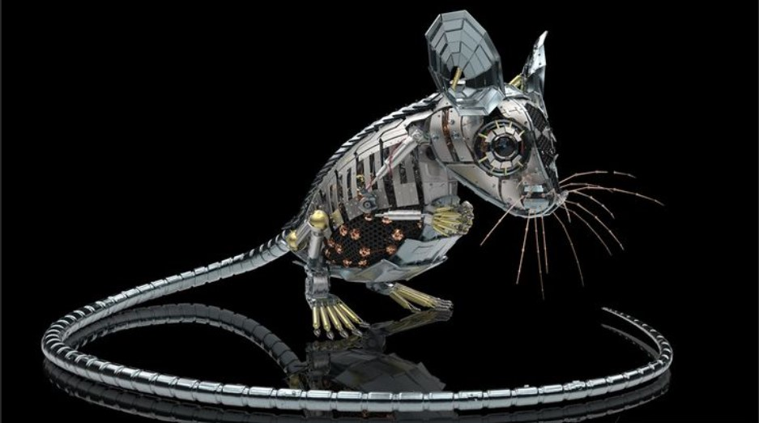
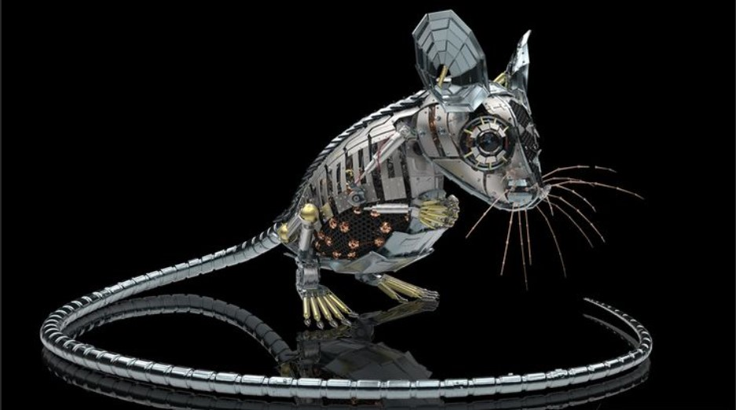
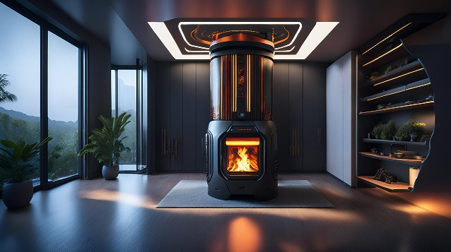
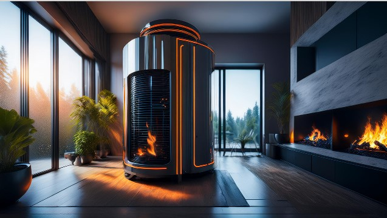
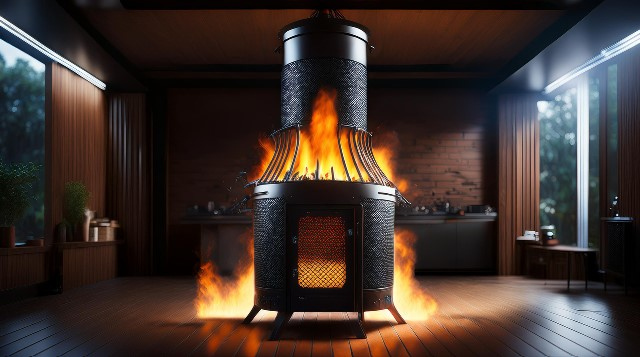

"Automated cleaning Amenities"
1. Aluminum Wedge + Dishwasher


An aluminum wedge can be used to help align or stabilize objects in the dishwasher, ensuring that they are cleaned more effectively. It could also be useful for adjusting the dishwasher’s racks or for specific cleaning purposes within the machine. A dishwasher is a significant time-saver, reducing manual effort in washing dishes. It provides a more thorough and consistent cleaning than hand washing and can sanitize items at high temperatures, improving hygiene.
Overall Benefit: Combining an aluminum wedge with a dishwasher can help optimize the dishwashing process, ensuring dishes and utensils are correctly positioned for optimal cleaning and drying.
2. Robot Mice - Dirt/Dusting

 

Beneficial Aspects:
Robot Mice: These are small, automated cleaning devices designed to navigate and clean floors. They can handle dusting and light dirt collection with minimal human intervention.
Overall Benefit: Robot mice can continuously maintain cleanliness in hard-to-reach areas, providing a consistent level of cleanliness and reducing the time and effort required for manual dusting and cleaning. They’re particularly useful for maintaining floors and surfaces in high-traffic areas.
3. Incinerator
  
Beneficial Aspects:
Incinerator: An incinerator is a waste management device that burns waste materials at high temperatures, reducing them to ash and gases. This process significantly decreases the volume of waste and can help in managing waste that cannot be recycled or composted.
Overall Benefit: By using an incinerator, you can effectively reduce the volume of solid waste, minimize landfill usage, and potentially generate energy from the burning process. It helps in managing waste more sustainably and efficiently.
4. Copper Scrap Rats - Tale larger Trash to Incinerator

Beneficial Aspects
Copper Scrap Rats:This term seems to refer to a system or mechanism involving copper (perhaps in the form of small, efficient tools or automated systems) to handle or manage larger pieces of waste.
Taking larger Trash to Incinerator: This involves transporting larger waste items to an incinerator for proper disposal.
Overall Benefits Using specialized tools or systems (referred to as "copper scrap rats") to manage and transport larger waste items to an incinerator ensures that bulky waste is handled efficiently. This helps in streamlining waste management processes, ensuring that large items are disposed of properly and safely, reducing clutter and potential environmental impact.
Summary
- Aluminum Wedge + Dishwasher: Optimizes dish placement and cleaning efficiency.
- Robot Mice: Provides consistent, automated cleaning for dust and dirt.
- Incinerator: Reduces waste volume and minimizes landfill usage.
- Copper Scrap Rats (for Larger Trash): Enhances efficiency in waste handling and disposal.
Each component plays a role in improving cleanliness, efficiency, and waste management, contributing to a more organized and sustainable environment.